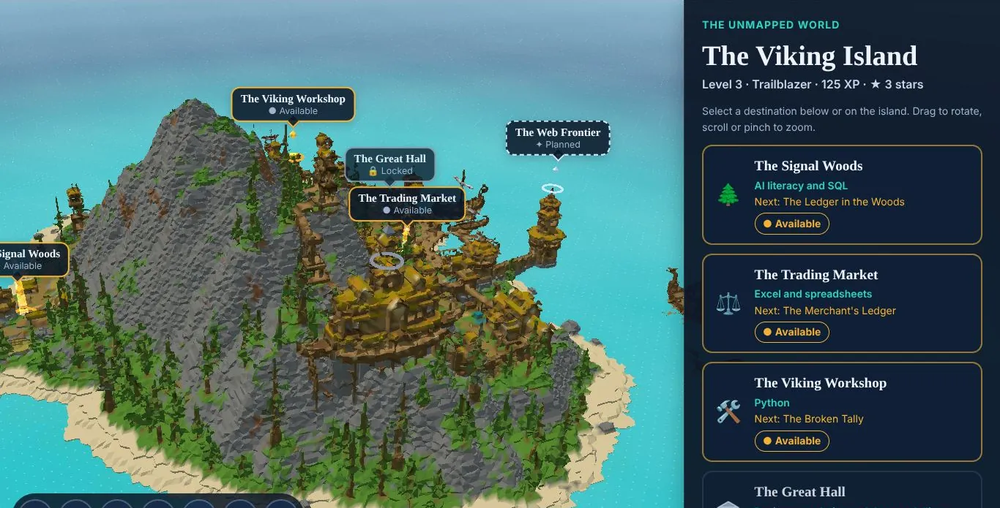
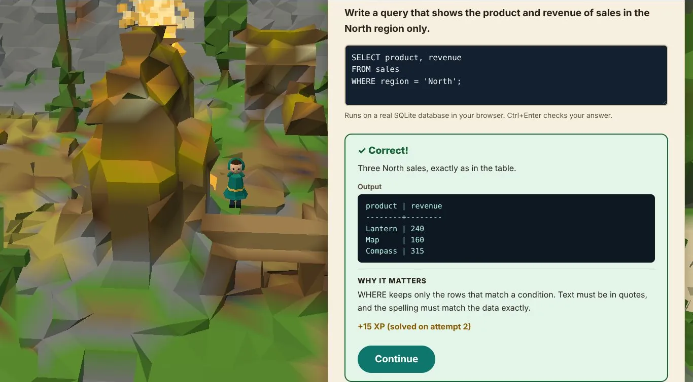
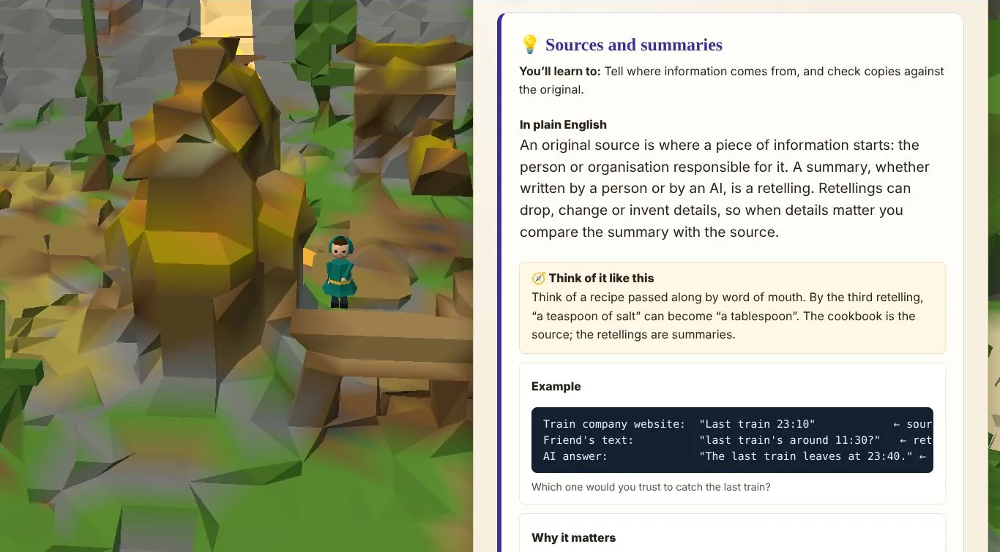

Interactive learning · 3D development
CURIOtrailFind your way through the digital world
A story-driven 3D learning game. You become a Pathfinder on a Viking island, and each place on the island teaches a practical digital skill through short quests.
Playable prototype No learning outcome claimed

At a glance
A learning game you can already play.
The game runs in the browser with no account. The figures below come from the project's own README and describe the prototype as it is published today.
01 · What it is about
Digital skills, practised inside a story
Each destination on the island holds one or two quests. A quest gives the player a small everyday problem and asks them to solve it with a real skill: checking an AI answer, querying data, fixing code, building a formula or reading a business figure.
| Destination | Quest | Skill practised |
|---|---|---|
| The Signal Woods | The Missing Signal. Inspect the evidence and choose a better prompt. | AI literacy |
| The Signal Woods | The Ledger in the Woods. Write queries with WHERE, GROUP BY and ORDER BY. | SQL |
| The Viking Workshop | The Broken Tally. Read a real error, fix it and predict the output. | Python |
| The Trading Market | The Merchant's Ledger. Build formulas from fragments and repair broken ones. | Excel |
| The Great Hall | The Jarl's Dashboard. Sort KPI cards into a dashboard and choose a chart. | Business analytics |
| The Great Hall | The Star Chart. Build a star schema and have it checked by rules. | Data modelling |
| The Web Frontier | Not playable yet. | Planned |

A quest step, as the player sees it
In the SQL quest the player's query runs on a real SQLite database inside the browser. The answer is checked by comparing results, and the feedback explains why the idea matters.
02 · Why I am building it
I learn by building the thing I need to practise with
I am largely self-taught, and reading about SQL, Python or spreadsheet formulas is not the same as using them. CURIOtrail is designed to help non-technical learners practise those skills through a game, rather than only reading explanations. I am one of those learners.
The problem
Explanations are easy to read and easy to forget. A quest makes the learner use the idea straight away, on a small problem with a clear answer.
Learning by building
I use the project to learn: defining the problem, breaking a concept into logic, trying an implementation, testing how it behaves and improving it.
Checking AI output
AI tools support parts of the development. I do not treat generated output as correct by default. The first quest teaches the same habit: compare a summary with its source.
03 · How it is formed
From quest data to a 3D world
The game is built in layers that are kept apart, so the rules can be tested without the graphics and the content can change without touching the code.
- Quests are data. Quests, destinations and unlock rules live in JSON files. Content checks run every Python and Excel solution.
- Rules are plain TypeScript. One engine handles progression, answer checking, XP and stars. It uses no page, React or 3D code, so it can be unit tested alone.
- Real tools run in the browser. SQL runs on an in-memory SQLite database. Python is a sandboxed subset of expressions, and formulas use a small spreadsheet evaluator.
- The island is Three.js. A light version of the island loads first, then the detailed one. A 2D map takes over when 3D is unavailable, and every quest still works.
- Screens are React. Home, map, quest, completion, and progress and settings, each with a phone layout. All text is HTML over the 3D canvas.
- Progress stays on the device. It is saved in the browser's local storage. There is no account and nothing is sent to a server.
How each quest is formed
1 · Learn
A theory card explains the idea in plain English, with an analogy, an example and a common mistake.
2 · Guided exercise
A first exercise on the same idea, with guidance. A wrong answer gets feedback written for that answer.
3 · Practice
Hints get stronger with each try. After three tries the answer can be revealed, and that step earns no XP.
4 · Check
A check of understanding closes the quest. The results screen reports each skill as shown first time, after a hint, or reviewed with help.

A theory card
Lessons come before the challenge they support and award no XP, because XP is kept for skill the player has shown.
Built with React, TypeScript, Three.js, sql.js and Vite. The repository includes unit tests and browser end-to-end checks. The 3D island is based on "Viking Island - Minecraft" by cubical.xyz, licensed CC BY 4.0, and was reduced for the web from 376 MB to 0.6 MB (light) and 4.4 MB (detailed).
04 · Where it stands
What works, and what is not done yet
Working today
- Six quests, each playable from start to finish, with theory cards.
- A 3D island map with a 2D fallback.
- A learner profile built from history kept only in the browser.
- Phone layouts, keyboard controls and settings for text size, motion and graphics.
Not done yet
- The Web Frontier, and five of the eight learning-path modules, are planned only.
- It has not been tested with beginner users or with real screen readers.
- Performance has not been measured on a real phone or graphics card.
- Python covers expressions only, and the characters are simple procedural figures.
05 · Try it
Play the prototype
It opens in a modern browser with no account. Rendering speed can vary by device, and the graphics setting can be turned down or off.
Live game: subashgauchan16.github.io/CURIO